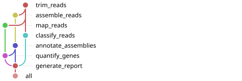

Introduction
Snakemake is a workflow manager written in Python.
Installation
The recommended way to install Snakemake is with Pixi.
pixi.toml
[workspace]
authors = ["John Sundh <john.sundh@scilifelab.se>"]
channels = ["conda-forge", "bioconda"]
name = "myworkflow"
platforms = ["osx-arm64", "osx-64", "linux-64"]
version = "0.1.0"
[tasks]
[dependencies]
snakemake = ">=9.27.0,<10"Activate the environment with pixi shell.
Core concepts
Snakemake workflows are built around files. Rules take one or more input files and create one or more output files. Rule dependencies are handled by matching filenames.
Snakefile
- 1
- Rule definition start, with descriptive name
- 2
-
input:defines the input file(s) - 3
-
output:defines the output file(s) - 4
-
shell:defines what command(s) to run. Here thetrtool is used to translate text to uppercase. - 5
-
The input and output are referred to with
{input}/{output}. Here thewcutility counts lines, words and bytes in the input.
Running a workflow
Run a Snakemake workflow by executing snakemake from the command line:
snakemake -s Snakefile -c 1The -c/--cores flag sets the upper bound for CPUs used and has to be specified (run with -c all to use available CPU cores). The -s/--snakefile flag points to the workflow definition file. This can be omitted if your definition file is any of Snakefile, snakefile, workflow/Snakefile, workflow/snakefile in the current working directory.
By default, Snakemake executes the first rule in the workflow (convert_to_upper_case in this toy example). To use a different ‘target’, specify it on the command line, e.g.:
snakemake -s Snakefile -c 1 a.uppercase.wc.txtA Snakemake convention is to use a pseudo rule named all at the top of your workflow which specifies the default targets:
Snakefile
rule all:
1 input:
"a.uppercase.wc.txt",
rule convert_to_upper_case:
input:
"a.txt",
output:
"a.uppercase.txt",
shell:
"""
tr [a-z] [A-Z] <{input} > {output}
"""
rule word_count:
input:
"a.uppercase.txt",
output:
"a.uppercase.wc.txt",
shell:
"""
wc {input} > {output}
"""- 1
-
The
allrule requires an input file which now becomes the default target of the workflow.
Snakemake also decides when to rerun a rule. By default a job is skipped if its output is already up to date — newer than every input, and produced with the same code, params:, and software environment. Change any one of those and only the affected jobs rerun, not the whole workflow.
--rerun-triggers picks which of these count: mtime, input, params, code, software-env — all five by default.
snakemake --rerun-triggers mtimeSwitching to mtime alone falls back to plain timestamp comparison.
Rule directives
A rule’s input: and output: are enough to chain rules together, but a real rule usually needs more: where to log its output, which software environment to run in, and how many resources to ask for. Take trimming a FASTQ file with fastp:
workflow/Snakefile
rule trim_reads:
input:
1 "data/sample1.fastq.gz",
output:
2 fastq="results/sample1.trimmed.fastq.gz",
html="results/sample1.fastp.html",
json="results/sample1.fastp.json",
log:
3 "logs/sample1.trim.log",
conda:
4 "envs/fastp.yaml"
container:
5 "docker://quay.io/biocontainers/fastp:1.3.6--h43da1c4_0"
6 threads: 4
7 params:
quality_cutoff=20,
shell:
"""
fastp --thread {threads} -i {input} -o {output.fastq} \
--html {output.html} --json {output.json} \
--qualified_quality_phred {params.quality_cutoff} \
8 >{log} 2>&1
"""- 1
- A single fixed input file, for now.
- 2
-
Named outputs —
output.fastq,output.htmlandoutput.jsonare referenced individually inshell:. - 3
-
log:is a dedicated log file, kept even if the rule fails. - 4
-
conda:points to an environment YAML; Snakemake creates and activates it when run with--deployment conda. - 5
-
container:names a Docker/Apptainer image Snakemake runs instead, with--deployment apptainer. - 6
-
threads:is a per-rule maximum, clamped tomin(threads, --cores)at runtime. - 7
-
params:defines rule-specific values that aren’t files — available inshell:as{params.name}, the same way as{input}/{output}. - 8
-
log:doesn’t redirect anything by itself —2>&1here is what sends fastp’s output to the log file. Forget it and the log stays empty while errors go straight to the terminal instead.
Note
resources: (e.g. mem_mb=4000) is the directive for memory, set the same way as threads:. See the docs for details on how to set resources.
Rule dependencies
A workflow rarely stops at one step. Snakemake chains rules by matching one rule’s output: to another’s input:. Classifying the trimmed reads with Kraken2 takes the output from trim_reads:
workflow/Snakefile
rule classify_reads:
input:
1 fastq="results/sample1.trimmed.fastq.gz",
2 db="resources/k2_standard",
output:
report="results/sample1.kraken2.report",
classified="results/sample1.kraken2.out",
log:
"logs/sample1.classify.log",
conda:
"envs/kraken2.yaml"
container:
"docker://quay.io/biocontainers/kraken2:2.17.1--pl5321h077b44d_0"
threads: 8
shell:
"""
kraken2 --db {input.db} --threads {threads} \
--report {output.report} --output {output.classified} \
{input.fastq} >{log} 2>&1
"""- 1
-
This is exactly
trim_reads’soutput.fastqpath — Snakemake resolves the dependency by matching that filename, no explicit link between the two rules needed. - 2
- This rule also requires a kraken2 database. Here the directory is assumed to contain the necessary kraken files.
Rule dependencies can also be specified using the rules.some_rule.output syntax. For our example workflow it would be:
workflow/Snakefile
rule trim_reads:
input:
"data/sample1.fastq.gz",
output:
fastq="results/{sample}.trimmed.fastq.gz",
html="results/{sample}.fastp.html",
json="results/{sample}.fastp.json",
...
rule classify_reads:
input:
1 fastq=rules.trim_reads.output.fastq,
db="resources/k2_standard",
...- 1
-
The input to
classify_readsis explicitly set to thefastqoutput fromtrim_reads.
Important
This explicit syntax requires that the referenced rule is defined before the rule referencing it.
Both rules are still hard-coded to one sample, and quality_cutoff is hard-coded too. Configuration and wildcards fix each of those in turn.
Configuration
Hard-coding quality_cutoff=20 means editing the Snakefile for every parameter change. A configfile moves values like this out of the workflow logic:
config/config.yaml
quality_cutoff: 20Inside the workflow the global config dictionary holds all configuration values.
workflow/Snakefile
params:
1 quality_cutoff=config["quality_cutoff"],- 1
-
params:now reads that dict instead of a literal20.
Running Snakemake with --configfile config/config.yaml supplies values to the config dictionary. You can also use --config key=value on the command line to supply/override values without editing the config file itself — useful for a one-off change (but be careful about the loss in reproducibility).
Wildcards
A wildcard generalises a rule across many files by turning part of a filename into a variable. Rewriting both rules with {sample} runs the same two-step pipeline for every sample we define:
workflow/Snakefile
1SAMPLES = ["sample1", "sample2", "sample3"]
2rule all:
input:
3 expand("results/{sample}.kraken2.report", sample=SAMPLES),
rule trim_reads:
input:
4 "data/{sample}.fastq.gz",
output:
fastq="results/{sample}.trimmed.fastq.gz",
html="results/{sample}.fastp.html",
json="results/{sample}.fastp.json",
log:
"logs/{sample}.trim.log",
conda:
"envs/fastp.yaml"
container:
"docker://quay.io/biocontainers/fastp:1.3.6--h43da1c4_0"
threads: 4
params:
quality_cutoff=config["quality_cutoff"],
shell:
"""
fastp --thread {threads} -i {input} -o {output.fastq} \
--html {output.html} --json {output.json} \
--qualified_quality_phred {params.quality_cutoff} \
>{log} 2>&1
"""
rule classify_reads:
input:
5 fastq="results/{sample}.trimmed.fastq.gz",
db="resources/k2_standard",
output:
report="results/{sample}.kraken2.report",
classified="results/{sample}.kraken2.out",
log:
"logs/{sample}.classify.log",
conda:
"envs/kraken2.yaml"
container:
"docker://quay.io/biocontainers/kraken2:2.17.1--pl5321h077b44d_0"
threads: 8
shell:
"""
kraken2 --db {input.db} --threads {threads} \
--report {output.report} --output {output.classified} \
{input.fastq} >{log} 2>&1
"""- 1
- A sample list — it could equally come from a config file or from an external sample sheet.
- 2
-
The
allrule at the top defines the workflow’s default target list. - 3
-
The
expand()helper function turns the sample list into concrete target filenames — here, the finalkraken2.reportper sample, soallpulls both steps through for every sample. - 4
-
The
{sample}wildcard is used to match any file starting withdata/, followed by at least one character (.+), and ending with.fastq.gz. - 5
-
classify_reads’sinput:resolves against whichever sampletrim_readsalready produced, using the same wildcard value throughout.
workflow/Snakefile
SAMPLES = ["sample1", "sample2", "sample3"]
rule all:
input:
1 [f"results/{sample}.kraken2.report" for sample in SAMPLES]- 1
- Here python list comprehension is used to define the input files.
Note
If filenames would collide, wildcard_constraints narrows what a wildcard is allowed to match (e.g. digits only). See the wildcards docs for details.
Important
Wildcards have two requirements:
- Wildcards used in the
input:directive of a rule must be present in theoutput:directive in order for Snakemake to resolve them. - All output and log files of a rule must contain the same wildcards.
Our example workflow is now generalised to use any number of input files matching data/{sample}.fastq.gz and allows the jobs to be parallelised.
Specifying workflow input
Most of the time a workflow has to start from one or more files. A typical example being the *.fastq.gz files used as input to trim_reads in the example above. Instead of hard-coding the samples (with the SAMPLES list) and the input directory (with data/{sample}.fastq.gz) we can supply a samplesheet that is read at runtime.
config/samples.csv
sample_id,file_path
sample1,data/sample1.fastq.gz
sample2,data/sample2.fastq.gz
sample3,data/sample3.fastq.gzAdding a sample_list parameter to the configfile lets you point Snakemake to a file where the workflow input is defined:
config/config.yaml
sample_list: config/samples.csvA Snakefile can contain any python code in addition to the rule definitions. So the samplesheet can be wired into the workflow with for example:
workflow/Snakefile
1import pandas as pd
df = pd.read_csv(config["sample_list"], index_col=0)
2SAMPLES = df.to_dict(orient="index")
rule all:
input:
3 expand("results/{sample}.kraken2.report", sample=SAMPLES),
4def get_input_fastq(wildcards):
5 return SAMPLES[wildcards.sample]["file_path"]
rule trim_reads:
input:
6 get_input_fastq,- 1
-
Import the
pandaspackage and read the samplesheet. - 2
-
Convert the dataframe to a nested dictionary (
{'sample1': {'file_path': 'data/sample1.fastq.gz'}etc.) - 3
-
The workflow targets are generated with the
expandhelper function. - 4
-
Define a python function
get_input_fastqwhich takes a single argumentwildcards. - 5
-
Return the file path for a given sample by doing a look-up in the
SAMPLESdictionary. - 6
-
The
trim_readsrule evaluates theget_input_fastqfunction once the wildcard values of a job are determined.
snakemake --configfile config/config.yaml -c 1Dry runs
Before running anything for real — locally or on a cluster — --dry-run (-n) shows the jobs Snakemake would run, without touching a single file:
snakemake --configfile config/config.yaml -nVisualising workflows
To visualise a workflow, run with --dag to print out the DAG in dot language:
digraph snakemake_dag {
graph[bgcolor=white, margin=0];
node[shape=box, style=rounded, fontname=sans, fontsize=6, penwidth=1];
edge[penwidth=1, color=grey];
0[label = "all", color = "0.00 0.6 0.85", style="rounded"];
1[label = "classify_reads", color = "0.22 0.6 0.85", style="rounded"];
2[label = "trim_reads\nsample: sample1", color = "0.44 0.6 0.85", style="rounded"];
3[label = "classify_reads", color = "0.22 0.6 0.85", style="rounded"];
4[label = "trim_reads\nsample: sample2", color = "0.44 0.6 0.85", style="rounded"];
5[label = "classify_reads", color = "0.22 0.6 0.85", style="rounded"];
6[label = "trim_reads\nsample: sample3", color = "0.44 0.6 0.85", style="rounded"];
1 -> 0
3 -> 0
5 -> 0
2 -> 1
4 -> 3
6 -> 5
}The --rulegraph flag is similar but shows a graph of rules rather than of every job:
The snakevision python package generates more advanced visualisations. Below is an example of this shown for a dummy-workflow.

Configuration profiles
Snakemake comes with a large set of command line arguments which allow you to customise a workflow run, for example:
-c/--cores: Number of CPUs.-p/--printshellcmds: Print out the shell commands that will be executed.-k/--keep-going: Go on with independent jobs if a job fails during execution.--deployment: Specify software environment deployment method [conda,apptainer,env-modules]-e/--executor: Use a custom executor, e.g. for cluster execution.
Typing --cores 1 --printshellcmds --keep-going --deployment conda on every run gets old fast. A configuration profile stores default CLI flags in a YAML file instead:
workflow/profiles/default/profile.yaml
cores: 1
printshellcmds: true
keep-going: true
deployment: condaSnakemake auto-discovers profiles/default/profile.yaml relative to the Snakefile or working directory so:
snakemake --configfile config/config.yamlpicks this up with no flags at all; --workflow-profile <name> points at a different one, and --workflow-profile none skips auto-discovery entirely.
A profile isn’t limited to convenience flags — it’s the same mechanism a compute cluster’s settings live in.
Running on a cluster
Snakemake can submit jobs through an executor plugin rather than running it locally. For SLURM, install snakemake-executor-plugin-slurm and create a profile for the cluster:
workflow/profiles/dardel/profile.yaml
- 1
- Sets the maximum number of cores to use on the host machine. The cores are used to execute local rules.
- 2
-
Set default resources (applied to all jobs). These can be overridden with
set-resources:for individual rules. - 3
- The compute account.
- 4
- The default slurm partition.
- 5
- Maximum total memory in MB.
- 6
- Runtime in minutes.
- 7
- The number of jobs you want to run in parallel.
- 8
- Override default resources on a per-rule basis.
Running snakemake --configfile config/config.yaml --workflow-profile workflow/profiles/dardel now submits every job via sbatch.
Best practices
Two commands catch most style and correctness issues before a workflow is shared:
- 1
- Checks the code quality of your workflow and that it conforms to best practices.
- 2
- Reformats the Snakefile in place, Black-style.
The Snakemake Language VS Code extension adds syntax highlighting and snippets for Snakefiles.
The Snakefmt VS Code extension gives you format-on-save for Snakefiles.
Key takeaways
- Rules are connected by matching filenames between one rule’s
output:and another’sinput:. - Snakemake only reruns jobs whose input, code,
params:, or software environment actually changed, not the whole workflow, unless--rerun-triggerssays otherwise. - Wildcards generalise rules to work with any number of input files (e.g. samples).
- Configuration profiles let you move CLI flags and resource definitions from the command line to YAML files.